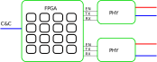

Tutorial¶
The challenge¶
The challenge:
“Our operatives have recovered a DeLorean in the ruins of an old mid-west US town. It appears to be locked, but we have successfully accessed its internal communications channels. According to the little data we have, the DeLorean internally uses an archaic technology called CAN bus. We need you to analyze the communications and find a way to unlock the vehicle; once unlocked, recover the secret flag stored inside. We have reason to believe that vehicle entry should be a fairly easy challenge, but to aid you in this, we have restored and reconnected the vehicle dashboard.”


About Can¶
Can Signaling¶
- Differential
- High transmision(the default state) is recessive (hang loose)

- Low transmission is dominant (driven)

- Ended with 120 Ohm resistors
- No dedicated TX/RX like on an UART
- No separate clock line like on SPI/JTAG/I2C
- 0 is STRONGER than 1
Can topology¶
- Star topology (and others)
Can frame¶

Can arbitration¶
- Prevent collision during arbitration (when I send a recessive bit but “see” a dominant one, I shut up)


Can protocol¶

Can Summary¶
- Can is different from average UART/SPI/JTAG
- Supports multiple devices on the same bus
- Has arbitration and crc’s to provide reliable delivery and priorities
- Has quite hard requirements in terms of timing (e.g. the ack bit and lack of clock). This is because the logic depends on the recieved data
For the challenge¶
Accessing the can bus calls for the following Components
- A can phy (that converts a logic signal into something valid with the can specs)
- A controller (that has strict timing and basic logic to offload the CPU)
- Logic (e.g. a program telling to send or receive frames and configuring the controller)
For hackers we want more
- Firewall: Functionality to filters out “unwanted” stuffing
- Confuse: send inaproritate ack requests, cause miscommunication
- Impersonation tools e.g. record/replay recieved packets
- Inject: Inject data put data on the bus
- Live take over: When device B sends ID 0xf77 take over the payload
- Triggers: Allow good triggers to perform fault injections

- Ordering hardware http://canable.io/ failed and it felt like a nice challenge to implement my own can controller and phy
- I was in no hurry so started coding
HDL¶
Using an FPGA was a good match.
FPGA architecture¶
From the hardware side of things LUT, Buffers, and inteconnects
- Look Up Tables
- Buffers. keep value
- Interconnects
Example final floorplan (Configuration loaded from memory/flash)

FPGA toolchain¶
A full toolchain does eventhing from the high level code until creating a bitstream that can be loaded in the fpga.
VHDL¶
The phy contains simple boolean logic (nothing is sequential). Everything happens at the same time
1 2 3 4 5 6 7 8 9 10 11 12 13 14 15 16 17 18 19 20 21 22 23 24 25 26 27 28 | library ieee;
use ieee.std_logic_1164.all;
entity can_phy is
port (
tx : in std_logic;
tx_en : in std_logic;
rx : out std_logic;
can_collision : out std_logic; --detect detect collisions
can_l : inout std_logic;
can_h : inout std_logic
);
end can_phy;
architecture rtl of can_phy is
signal rx_out : std_logic; --create rx_out as buffer
begin
rx <= rx_out;
--driving the can bus when en is enabled
can_l <= tx when (tx_en = '1') else 'Z';
can_h <= not tx when (tx_en = '1') else 'Z';
-- alway assign rx to can_h
rx_out <= '1' when can_h = '1' and can_l ='0' else '0';
--we can only detect when we send a 1 but the bus remains low
can_collision <= '1' when tx ='1' and tx_en = '1' and not rx_out ='0' else '0';
end rtl;
|
- Everything is happening at the same time
- Try state logic
- Buffers can be used to separate/synchronize parts of the design
- There is not a real for loop (everything needs to be layed out)
- There are no real limilations on “word size” if you feel like 13 bits you can
The solution¶
I used VHDL as language of choice because I have a papilio board and the examples are using VHDL.
I ended up creating the following architecture

- Show challenge
- Demo Linux support
- Demo solution
- Show stats (Generated using gitstats on my working repository )
- If feels good having a better understanding of the lower levels
And for something real:
http://ww1.microchip.com/downloads/en/DeviceDoc/20005282B.pdf